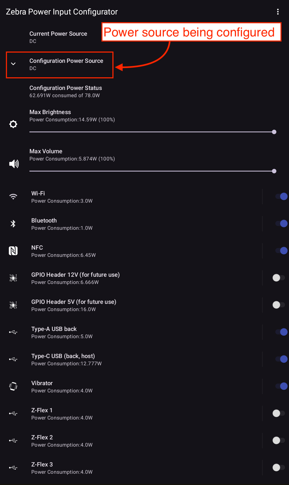
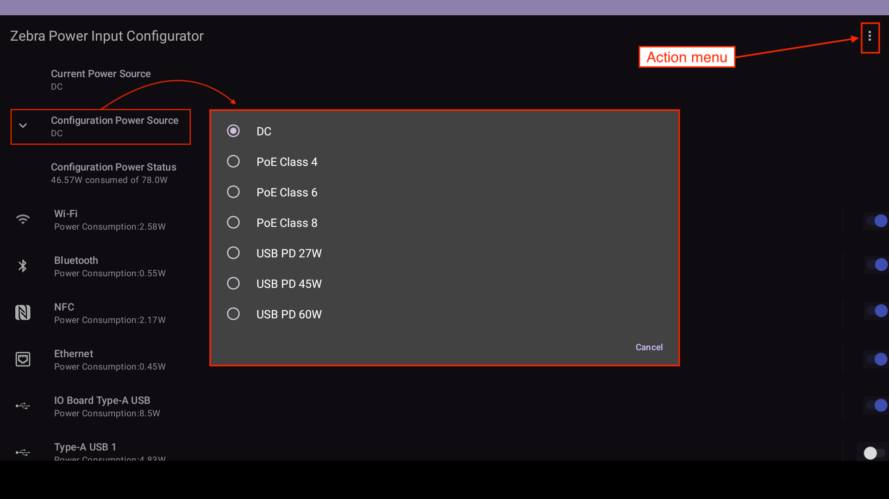

Overview
When running on the intended target, the Zebra Power Input Configurator (zPIC) displays the power usage of the host device. To adjust a device's power consumption, simply toggle device peripherals on/off (or move its slider, as applicable). Changes to power usage are displayed in real time. When the desired power consumption level is reached, zPIC outputs the settings to a device-specific .json file for distribution to other like devices across an organization. If a variety of power consumption scenarios is possible for one more devices, multiple power configurations can be saved and stored on such devices. On boot-up, zPIC selects the appropriate power profile based on the energy available.

Components of the KC50 Kiosk and the power consumption of each.
Click image to enlarge; ESC to exit.
Usage Synopsys
To create a zPIC power profile:
Push the zPIC
.apkfile to a supported Zebra device and launch.
Upon launching the zPIC app, the current power source is selected by default.Select the "Configuration Power Source" to be configured from the drop-down (if different from the default):  Configurable power sources for Zebra's ZEC500 "wireless docking" computer.
Click image to enlarge; ESC to exit.Configure settings as desired for the power scenario expected for the host device.
As each setting is changed, note the changes to the "Configuration Power Status" reading.When desired power levels are reached, select EXPORT from the Action menu ( in upper-right corner) to save the configuration file.
IMPORTANT: DO NOT RENAME THE FILE. Android file browser showing multiple KC50 config files.
Android file browser showing multiple KC50 config files.
Click image to enlarge; ESC to exit.Optionally, repeat Steps 2, 3 and 4 until all desired power scenarios are created and saved.
Files are stored on the device in:
\Android\data\com.zebra.powermanagerapp(see image above)Copy the zPIC config file(s) from their location on the device and deploy to the desired target(s).
IMPORTANT: Please read Usage Notes below.
Usage Notes
General Usage
- Generally, zPIC is used on a device to generate one or more files to be distributed for remote device configuration. The tool is NOT intended for making in-person adjustments to an individual device's power usage, though it can be used to do so (using the "Apply" function).
- zPIC senses the power provided to the host device and displays it in the “Current Power Source” field.
- By default, the current power source is also displayed in the "Configuration Power Source" field. To change the power profile being configured, tap this drop-down field and select another supported profile (e.g. "PoE Class 4").
- When a different power profile is selected, its power budget and suggested default settings are displayed.
- As changes are made to the toggles and/or sliders of device components, the power consumption required for the currently selected components is displayed in the “Configuration Power Status” field.
- Once the desired power consumption is achieved, exporting the config file stores those settings in a
.jsonfile named after the device model and the selected power source (similar to those in the image shown above). - Do not rename the default names of files saved by zPIC; this ensures proper auto-selection based on power sensed at device startup.
Power Sources
The zPIC app can configure power profiles for the following power sources, as supported by target devices:
- DC - Direct current supplied by an AC/DC power adapter, sometimes known as a "power brick" or similar.
- PoE - Power over Ethernet supplied via Cat5e (or higher) network cable and RJ45 jack:
- PoE class 4: Rated to provide ~ 24.5 watts to a device
- PoE class 6: Rated to provide ~ 51.0 watts to a device
- PoE class 8: Rated to provide ~ 71.3 watts to a device
- USB PD - USB Power Delivery specification provides power via USB-C cable:
- USB PD 27W: Rated to provide a maximum of 27 watts to a device
- USB PD 45W: Rated to provide a maximum of 45 watts to a device
- USB PD 60W: Rated to provide a maximum of 60 watts to a device
Output Files
- Selecting the Export Action (from the menu) creates a
.jsonfile containing the currently displayed power settings for the selected "Power Configuration Source" drop-down menu. - Exported files are stored in the
\Android\data\com.zebra.powermanagerappdirectory on the host device and can be distributed to like target devices using Zebra StageNow or a company's own EMM with Zebra OEMConfig. - To simplify file identification, target model number is embedded within exported file names.
- The
.jsonconfig files must not be edited by hand, and file names MUST NOT be changed. - If no zPIC-generated config file is present for the detected power source type, the OS-default configuration is applied.
Target Devices
- Only SKUs supporting PoE and/or USB PD can use zPIC and accept configuration files. These are generally the “Premium” KC50 and ZEC500 SKUs.
- zPIC config files must be created on a device with the same configuration as the intended targets. For example, a 22-inch KC50 is required to generate zPIC files for other 22-inch KC50s.
Sliders
Brightness Slider
- “Max Brightness” slider sets the maximum brightness for the target device screen when the device slider appears at its maximum. For example, if this control is set to 50 percent in zPIC, the maximum brightness of a device with the resulting configuration would be 50 percent when its slider is set for maximum brightness. If a device user then slides the brightness to 50 percent, the true brightness of that device would be about 25 percent of its maximum. Values for this setting are approximate.
Volume Slider
- The “Max Volume” slider controls the “master” volume on the device, setting a ceiling for all device audio streams, including media, notifications and ringer volume (if applicable). For example, if zPIC is used to set the device volume to 50 percent of its maximum, the volume slider on the target device cannot move past its halfway point toward maximum volume. This is unlike the brightness slider, which provides no visual indicator of the configured limit.
- For audio streams previously set at levels LOWER than a zPIC-configured master limit (e.g. through MX Audio Manager), such levels remain unchanged. Levels set HIGHER than the new limit are reduced to (approximately) the maximum set by zPIC.
- Max Volume settings configured through zPIC take precedence over those set by any other means.
Toggle Switches
- zPIC employs toggle switches for device radios, vibration and ports. These controls either turn the feature on (blue) or off (white). If a port is toggled off, it receives no power, and (as applicable) provides NO POWER to devices connected to it (e.g. USB ports).
- NOTE: While the "GPIO Header" ports appear to be enabled in zPIC for some devices, they are intended for future expansion and are not currently supported.
FINISH FINISH FINISH THE BELOW LOW LOW
 Use the zPIC Action menu to activate Export and Apply functions, or to expose the zPIC version number.
Use the zPIC Action menu to activate Export and Apply functions, or to expose the zPIC version number.
Click image to enlarge; ESC to exit.
Using the "Apply" Function
The "Apply" function saves settings configured in zPIC for use on the host device. This can be useful for manually configuring individual devices and for testing before deployment to an enterprise.
IMPORTANT NOTES
- Files created by the "Apply" function are inaccessible by the device user.
- Power settings configured using the Apply function DO NOT persist on the device following an Enterprise Reset.
- To persist zPIC settings, zPIC config file(s) must be deployed using StageNow and Persist Manager.
To use the Apply function:
Select "Apply" from the Action menu () in the upper-right corner of the zPIC screen.
Settings are saved to a.jsonfile on the device.Power-off and reboot the device. New settings are applied upon reboot.
Launch the zPIC app and (if starting up with a different power source than the one being tested), select the "Configuration Power Source" again.
Verify that the saved settings are the same as those appearing in the app.
The zPIC app allows admins to configure settings for all power sources supported by a device and use the "Apply" function to store a power profile for each of those settings on the device. When such a device is powered up, Zebra software embedded in the device detects the power being supplied at boot-up and applies the appropriate power profile. The zPIC app can be used to verify that such profiles have been stored on a device simply by selecting each power source from the "Power Configuration Source" drop-down menu in turn and confirming that the saved settings are displayed for each.
Using the "Export" Function
After one or more zPIC configuration files have been applies and tested, the json files can be exported for deployment to additional devices across an enterprise. For organizations with differing power scenarios, multiple config files can be deployed to devices. Zebra's embedded software detects the connected power source and selects the appropriate zPIC configuration file automatically.
The zPIC app screen displays
14_zpic_power_configs.png
when running on the PoE-capable Zebra KC50 Kiosk Computer, showing some of its configurable components and their power consumption. Overall power usage is adjusted simply by toggling components on or off and/or adjusting sliders on devices containing such peripherals. The "Configuration Power Source" presents a drop-down menu showing the supported PoE classes for the device, along with the power budget available for each, automatically limiting available selections for the selected budget.
Notes
- Once completed, a configuration file can be applied to the host device or exported for deployment across an enterprise. Either function is accessed from the three-dot action menu in the upper-right corner of the zPIC app.
- Zebra recommends fully testing all configuration files on a small group of devices before wider deployment.
- Target devices must be powered off and restarted after receiving zPIC configuration file for its settings to take effect.
To export settings for deployment:
- Once power settings are configured as needed, select EXPORT from the Action Menu in the upper-right corner.
- Using an Android file app or device browser, navigate to the following device location and locate the saved config files:
/sdcard/Android/data/com.zebra.powerinputconfigurator/files - Copy the desired file(s) onto the host computer.
- DO NOT CHANGE THE NAME OF THE CONFIG FILE
Android file browser showing multiple KC50 config files.
Click image to enlarge; ESC to exit.
Also See
- zPIC Setup and Deployment | Where to download, which devices and BSP versions are supported
- About the zPIC app | General description and expected use cases